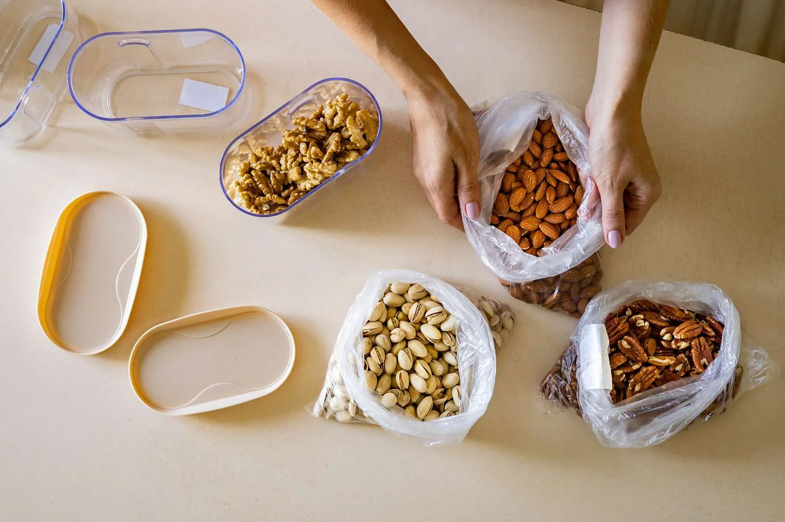

Discover, savor, and share the finest walnut creations — your ultimate destination for recipes, tips, and inspiration
Healthy Walnut Recipes for Every Season
The Walnut Recipe Vault isn’t just another recipe site—it’s a personal project that grew out of my love for cooking and, oddly enough, walnuts. Over the years, I’ve experimented in my kitchen, trying to see how far I could take this humble nut—from crunchy salad toppers to creamy sauces that somehow make you forget there’s no dairy involved. What I’ve learned is that walnuts have this rare ability to blend nutrition and flavor effortlessly; they’re rich in omega-3s, antioxidants, and plant-based protein, which is probably why I feel less guilty when I end up snacking on them straight from the jar.
Each recipe here has been tested in my own kitchen before it makes its way onto the site. I focus on using fresh, seasonal ingredients that pair naturally with walnuts' earthy depth—because real flavor comes from balance and timing, not shortcuts. Whether you’re an experienced home cook or someone still figuring out the difference between “simmer” and “boil,” I’ve designed these recipes to be approachable, healthy, and genuinely satisfying.
At its core, this site is built on trust and creativity — you can count on every recipe to be something I’ve actually cooked and enjoyed. If it doesn’t make it past my own table, it doesn’t get posted.
Why Walnuts Deserve a Place in Your Diet: Insights from the Walnut Recipe Vault
Here, it’s not just about flavor — it’s about exploring the incredible health benefits of this powerhouse nut and sharing what I’ve learned along the way. Over the years, I’ve come to appreciate how walnuts — rich in omega-3 fatty acids, antioxidants, and essential minerals — can turn even simple ingredients into nourishing dishes. I’ve read the research on how they support heart health, brain function, and reduce inflammation, but I’ve also experienced those benefits firsthand. When I started adding walnuts to my daily meals — from breakfast smoothies to homemade sauces — I noticed how much more energized and balanced I felt throughout the day.
What continues to amaze me is how walnuts contribute to long-term wellness in such natural ways. They help lower LDL (bad) cholesterol while boosting HDL (good) cholesterol, which keeps your heart in good shape. Their healthy fats and fiber make them surprisingly filling, perfect for anyone trying to maintain a balanced diet. And thanks to their antioxidants, walnuts also help protect your cells from everyday stress — something we could all use a bit more of.
Whether I’m enjoying them raw, roasted, or blended into a creamy dressing, walnuts have earned a permanent place in my kitchen. If you’re looking for a delicious and reliable way to support your health, the Walnut Recipe Vault is a great place to start — a collection built from real recipes, honest experiences, and a genuine passion for good food and well-being.
Decadent Walnut Dessert Ideas You’ll Love
Welcome to my corner of the kitchen — a space where I share not only my love for baking but also a growing collection of indulgent walnut dessert ideas gathered and inspired by my own kitchen experiences. Over the years, I’ve experimented with countless recipes using walnuts, discovering just how versatile and delicious this ingredient can be. From rich chocolate brownies packed with crunchy walnuts to buttery tarts layered with smooth caramel-walnut filling, and creamy cheesecakes topped with candied walnut crumbles — each dessert reflects both my passion for flavor and my personal touch in the process.
Here on the Walnut Flavor Vault, I’ve brought together these recipes to celebrate the natural sweetness and depth of walnut flavor, whether you’re baking for a special occasion or simply treating yourself at home. I take pride in curating and testing each dessert to achieve the perfect balance of texture and taste, ensuring every bite feels truly memorable.
This collection is a blend of inspiration and experience — a place where my love for walnuts meets creativity. With every creation, I’m reminded that one bite is all it takes to fall in love — a taste that lingers, comforts, and keeps you coming back for more.
Famous Faces Who Can’t Get Enough of Walnuts and Their Favorite Walnut Recipes
From Hollywood kitchens to professional sports arenas, it’s clear that walnuts have earned their place as a favorite among chefs, celebrities, and athletes alike. Renowned chef Jamie Oliver frequently uses walnuts in his rustic salads and baked creations, often noting their rich flavor and impressive nutritional value. Gwyneth Paltrow, through her wellness brand, has featured walnut-based recipes that highlight how this simple ingredient supports balanced, plant-forward eating — something I’ve personally come to appreciate in my own cooking journey. Even world-class athletes like Novak Djokovic reportedly include walnuts in their diet for sustained energy and post-training recovery, a testament to their nutrient density and versatility. It’s easy to see why a collection like the Walnut Flavor Vault feels like a natural home for these kinds of wholesome, inspiring creations.
Beyond fine dining and fitness, culinary icons such as Nigella Lawson and Paul Hollywood have showcased walnut desserts on their television programs, inspiring countless home bakers — myself included — to experiment with the nut’s deep, toasty flavor. Their passion mirrors what I love most about baking with walnuts: they bring both substance and soul to a recipe. Whether you’re preparing a show-stopping tart or tossing together a simple grain salad, walnuts bridge the gap between taste, texture, and health.
For me, that’s what makes this humble nut so special. It’s more than just an ingredient — it’s a source of inspiration, creativity, and nourishment that continues to connect kitchens and communities around the world.
The Story of Walnuts: From Ancient Persia to Modern Kitchens
Long before walnuts became a staple in brownies and salads, they were considered a delicacy fit for royalty. The history of walnuts dates back thousands of years to ancient Persia, where they were known as the “Royal Nut.” Persian kings treasured them not only for their rich taste but also for their nourishing properties. Traders and travelers later introduced walnuts to Greece and Rome, where they became symbols of fertility, wisdom, and abundance. Roman brides and grooms even shared walnuts with guests during weddings, a tradition symbolizing prosperity and happiness.
As centuries passed, walnuts continued their journey across continents. The Romans brought them to Europe, where they flourished in regions like France and Italy. During the Middle Ages, walnuts became an important ingredient in European cuisine, used in sauces, pastries, and even medicines. Their natural oils were prized for skincare and lamp lighting. When explorers began traveling to the New World, walnut trees were among the species they carried across oceans. Eventually, the English walnut — the variety most of us know today — made its way to North America, where it thrived in the fertile soils of California’s Central Valley.
Today, walnuts remain one of the world’s most beloved and versatile nuts. They’re celebrated not only for their earthy flavor but also for their incredible health benefits — from improving heart health to boosting brain function. At Walnut Recipe Vault, we honor this legacy by sharing healthy walnut recipes that highlight both tradition and innovation. From classic desserts to gourmet walnut meals, walnuts continue to inspire chefs and home cooks alike. What was once a luxury for kings has become a staple in every walnut essence pantry, connecting generations through taste, culture, and nourishment.
From ancient Persian gardens to modern culinary creations, the walnut’s story is one of endurance, evolution, and timeless appeal — proving that truly great ingredients never go out of style. Whether you’re exploring healthy walnut recipes or indulging in new gourmet walnut meals, each bite carries the rich heritage and essence of this remarkable nut.

Preserving Perfection: How to Store Walnuts Properly
Long before walnuts became a staple in brownies and salads, they were considered a delicacy fit for royalty. The history of walnuts dates back thousands of years to ancient Persia, where they were known as the “Royal Nut.” Persian kings treasured them not only for their rich taste but also for their nourishing properties. Traders and travelers later introduced walnuts to Greece and Rome, where they became symbols of fertility, wisdom, and abundance. Roman brides and grooms even shared walnuts with guests during weddings, a tradition symbolizing prosperity and happiness.
As centuries passed, walnuts continued their journey across continents. The Romans brought them to Europe, where they flourished in regions like France and Italy. During the Middle Ages, walnuts became an important ingredient in European cuisine, used in sauces, pastries, and even medicines. Their natural oils were prized for skincare and lamp lighting. When explorers began traveling to the New World, walnut trees were among the species they carried across oceans. Eventually, the English walnut — the variety most of us know today — made its way to North America, where it thrived in the fertile soils of California’s Central Valley.
Today, walnuts remain one of the world’s most beloved and versatile nuts. They’re celebrated not only for their earthy flavor but also for their incredible health benefits — from improving heart health to boosting brain function. At Walnut Recipe Vault, we honor this legacy by sharing healthy walnut recipes that highlight both tradition and innovation. From classic desserts to gourmet walnut meals, walnuts continue to inspire chefs and home cooks alike. What was once a luxury for kings has become a staple in every walnut essence pantry, connecting generations through taste, culture, and nourishment.
From ancient Persian gardens to modern culinary creations, the walnut’s story is one of endurance, evolution, and timeless appeal — proving that truly great ingredients never go out of style. Whether you’re exploring healthy walnut recipes or indulging in new gourmet walnut meals, each bite carries the rich heritage and essence of this remarkable nut.
The Rise of Walnut-Based Diets: A Look at New Health Research
Recent clinical research has shed fresh light on the health impact of walnuts. A 2025 article from a study at UConn School of Medicine reports that eating walnuts regularly may help reduce inflammation and lower the risk of colon cancer.
According to the study, “Ellagitannins in the walnut are importantly providing the anti-inflammatory and anti-cancer properties that we’re seeing in patients … particularly the gut’s conversion of ellagitannins to a potent anti-inflammatory agent, urolithin A.”
This means that the polyphenol compounds unique to walnuts — when processed by your gut microbiome — produce powerful molecules that help reduce inflammation and may even inhibit cancer development.
These findings strongly support the mission of Walnut Recipe Vault: to highlight walnut not just as a tasty ingredient, but as a nutritionally powerful addition to everyday meals. With the potential to improve gut health, reduce inflammation, and even impact long-term cancer risk, walnuts offer more than flavor — they bring real health value.
For people who cook, bake, or build recipes around walnuts (whether it’s walnut pesto, walnut-based desserts, or hearty walnut salads), this study gives even more reason to include walnuts regularly. It aligns with growing scientific consensus that nuts — especially walnuts — deserve a prominent place in a balanced, health-oriented diet.
Read the full article here: Walnut consumption curbs inflammation and may reduce colon cancer risk, clinical trial finds
Looking for Something Different?
I recently explored Constantly Pining for More website, and I have to say, it’s a fantastic resource for anyone interested in vegan pine nut delicacies. As someone who loves experimenting with plant-based baking, I really appreciate the way the site shares well-thought-out recipes and tips that feel both creative and approachable. The author clearly knows her craft, offering guidance that feels trustworthy. I especially enjoyed learning new ways to incorporate pine nuts into elegant vegan treats, which makes baking feel both fun and refined. Overall, I would highly recommend this website to anyone looking to explore unique plant-based indulgences.